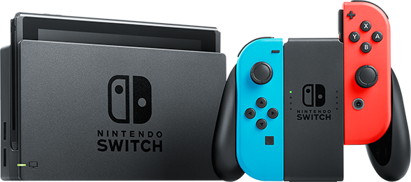

Home
Nintendo Switch
Nintendo Ds
Media

Nintendo Switch
닌텐도에서 개발한 8.5세대 게임기로, 휴대용과 가정용 게임기가 통합된 구조를 취한 최초의 하이브리드형 게임기이다.
2017년 3월 3일, 일본, 미국, 캐나다, 유럽, 호주, 남아공, 홍콩에서 발매되었고. 한국, 대만에는 2017년 12월 1일 정식발매됬다.